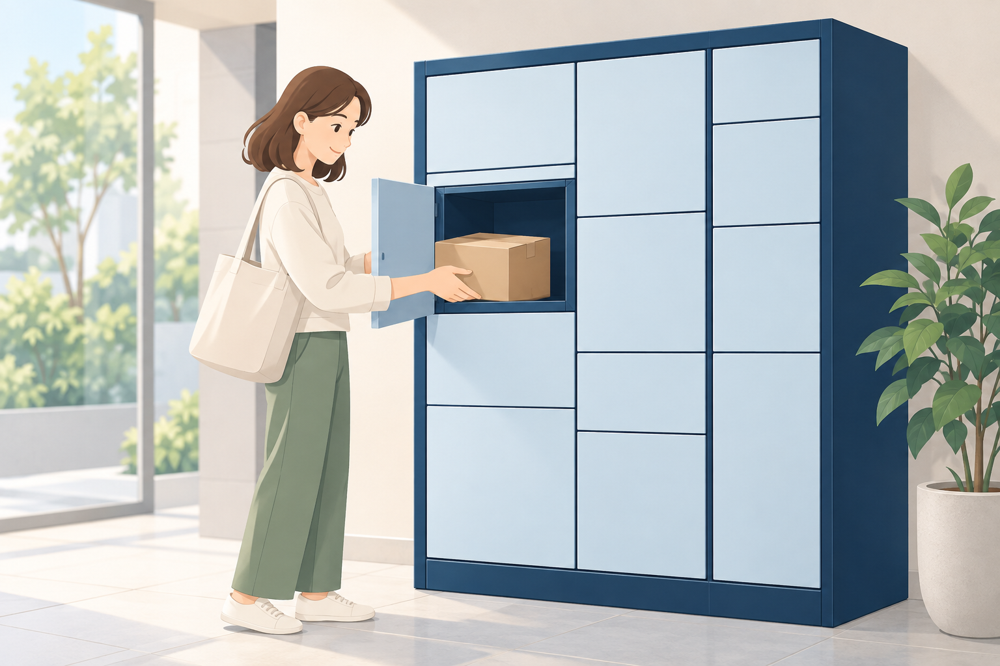

宅配ボックスの基本ルール
- 荷物が届いたら、早めにお受け取りください。長期間入れたままにすると、他の入居者様が利用できなくなります。
- 私物や不要品の保管場所として使用することはできません。
- 大きな荷物など、ボックスに入らない荷物は利用できない場合があります。
荷物の受け取り方法

イメージイラストです。実際の設備・操作方法は物件により異なります。
1 通知票を確認ポストに届いた通知票を確認します。
2 番号を確認ボックス番号・暗証番号を確認し、ボックスの案内に従って操作します。
3 荷物を受け取る扉を開けて、荷物を受け取ります。
確認事項：通知票の呼び名、番号の種類、操作手順を実機で確認します。上の図は実際の操作パネルを示すものではありません。
暗証番号について
宅配業者が設定した暗証番号は、管理会社では確認できません。
通知票をなくした場合や番号が分からない場合は、配達した宅配業者へお問い合わせください。
利用できないケース
- ボックスが満杯の場合は、手渡しや持ち戻りになることがあります。
- 着払いや代引きなど、受け取り時に支払い・確認が必要な荷物は利用できない場合があります。
開錠できなくなった場合
番号が分からないまず、配達した宅配業者へお問い合わせください。
操作しても扉が開かない・故障と思われる管理会社へご連絡ください。
管理会社による開錠作業お急ぎの対応には、出動費5,500円（税込）がかかります。
点検などで管理会社が訪問した際に、無償で再設定・開錠できる場合があります。訪問は不定期です。
確認事項：問い合わせ順序、開錠条件、費用、無償対応条件が現行運用に合うか確認します。
長期放置への対応（管理会社による点検）
荷物が長期間受け取られていない場合、管理会社が必要に応じてボックスを開け、荷物の有無を確認することがあります。
点検時は荷物の取り扱いに配慮し、必要に応じて入居者様へご連絡します。
注意事項
- 貴重品の保管場所として使用しないでください。
- 荷物の紛失・破損については、宅配業者の規定に基づく対応となります。
- 故障や扉が開かない場合は、管理会社へご連絡ください。
確認事項：紛失・破損の説明が設備側の故障にも一律に当てはまるか、契約・運用資料で確認します。